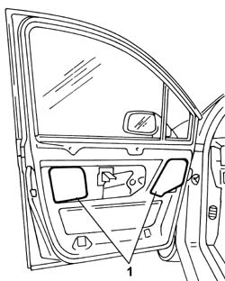

7005A06 FRONT SIDE DOOR LOWER WATER PROTECTION - R.R. OR POSITION WITH PANEL REMOVED
- Path
- Procedures > 70 FITTINGS > 7005 PASSENGER COMPARTMENT FRONT SIDE DOORS > 7005A LOCATION OF FRONT DOOR WIND NOISES > 7005A06 FRONT SIDE DOOR LOWER WATER PROTECTION - R.R. OR POSITION WITH PANEL REMOVED
- Kind
- repair procedure (removal / refitting; the operation number is the code)
- Applies to
- all engines; all production periods
- Interactive page
- https://sloeber94.github.io/elrnDB-fUlss/en/#/179007650
Applies to: all engines; all production periods
 Removing
Removing
 Refitting
Refitting
Applies to: all engines; all production periods
Removing
RefittingTopics that link to this page (8)
- 7005A28 FRONT SIDE DOOR LIMITER- REPAIR OR REPLACE
- 7005C08 FRONT DOOR EXTERIOR HANDLE MOUNT (ONE), LH OR RH - R R
- 7005C09 FRONT DOOR OUTER HANDLE MOUNT (1), LH OR RH - R R WITH DOOR PANEL REMOVED
- 7005C10 FRONT DOOR OUTER HANDLE - R R WITH DOOR PANEL REMOVED
- 7005C11 FRONT SIDE DOOR OUTSIDE HANDLE R R
- 7005C17 BLOCK FOR FRONT SIDE DOOR LOCK R R WITH DOOR PANEL REMOVED
- 7005D26 FRONT SIDE DESCENDING WINDOW GLASS SCRAPER (OUTER) R R
- 7005E52 WEATHER STRIP ON FRONT SIDE DOOR PILLAR TRIM (ONE) LH OR RH - R R